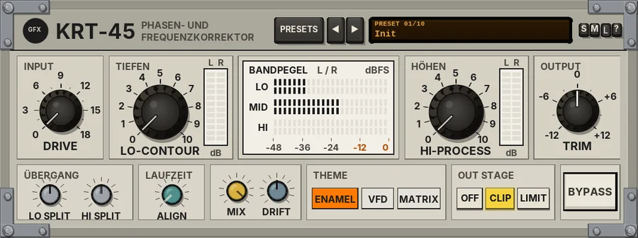

KRT-45
A phase-alignment and harmonic-restoration processor that lines the lows up behind the highs, then restores the low end and the top end dynamically.

Overview
KRT-45 (Phasen- und Frequenzkorrektor) is a sonic phase processor in the spirit of the classic late-80s rack enhancers, built as heavy 1980s Eastern European laboratory test-bench gear.
The idea: low frequencies pass through circuits and speakers a little more slowly than the highs, so the fast edge of a sound and its body smear apart. KRT-45 holds the lows and mids back a little so that the high-frequency edge arrives first and the body follows in step - a tighter, clearer, more defined sound without much change in tone. It does this with all-pass filters on the whole signal, so there are no comb notches anywhere, and with every control at 0 the frequency response stays flat.
Then it restores. LO-CONTOUR is a dynamic low-band boost with its own compressor, so the bass gets fuller but tightens on loud, sustained notes. HI-PROCESS is a programme-dependent high-band lift that gives dull material and high-frequency transients more help than material that is already bright. A small transistor INPUT stage adds gentle harmonics. The two channels are processed independently, as on dual-mono hardware, and the plug-in has no latency.
Reach for it for
- Adding clarity and definition to a mix without obvious EQ
- Tightening and lifting kick and bass
- Bringing life back to dull or tape-sourced material
- Vocal presence and air that follows the performance
- Gentle final-stage polish on a master
Controls
The header
- PRESETS
- Opens the full preset list.
- ◄ / ►
- Step to the previous or next preset (wrapping round).
- Preset display
- Shows the preset number and name. Click it for the preset list too.
- S / M / L
- Panel size: small, medium or large. The panel also scales to fit the plugin window.
- ?
- Opens a pop-up with the design credit, the GFX website address and the address of this manual. Click anywhere to close it.
INPUT
- DRIVE
- 0 to +18 dB into a small, biased transistor stage, level-matched so the volume does not jump (0 dB by default, where the stage is switched out). It adds mostly 2nd harmonic with some 3rd: subtle warmth at low settings, about 0.4% distortion at +12 dB on a -18 dBFS tone, and more on loud material.
TIEFEN
- LO-CONTOUR
- A dynamic low boost, 0 to 10 (0 by default), up to about +12 dB with its peak near 100 Hz; while you touch it the value also shows in dB. A sub filter at 35 Hz keeps the deepest sub in check rather than lifting it. An internal compressor eases the boost on loud, sustained bass (never taking back more than 60% of it), so the low end tightens instead of booming, while the first 10 ms of each kick still get the full lift for punch.
- L / R ladder
- The boost each channel is applying right now, 0 to 12 dB.
BANDPEGEL
Three pairs of ladders show the LO, MID and HI band levels of the left and right channels (peak, -48 to 0 dBFS). The bands are split at LO SPLIT and HI SPLIT.
HÖHEN
- HI-PROCESS
- A programme-dependent high lift, 0 to 10 (0 by default), up to +12 dB. It always gives 30% of the set lift, plus up to 50% more the duller the material is, plus up to 40% on high-frequency transients. At 10, steady bright material gets about +3.6 dB, dark material about +6 to +9 dB, and transients on dull material up to +12 dB. Very quiet passages get no lift, so hiss doesn't pump up, and the added top passes a gentle soft clip so it never turns to fizz.
- L / R ladder
- The lift each channel is applying right now, 0 to 12 dB.
OUTPUT
- TRIM
- The output level, -12 to +12 dB (0 dB by default). Use it to match the level when you compare with BYPASS.
ÜBERGANG
- LO SPLIT
- The crossover between the LO and MID bands, 150 to 250 Hz (200 Hz by default). It sets where LO-CONTOUR works. Lower splits also give more delay to the lows.
- HI SPLIT
- The crossover between the MID and HI bands, 2 to 4 kHz (3 kHz by default). It sets where HI-PROCESS starts and where ALIGN is centred.
LAUFZEIT
- ALIGN
- The phase alignment, 0 to 100% (0 by default). The band split itself already holds the lows back about 2.5 ms against the highs; ALIGN adds an all-pass round the HI split that fills in the presence region. At 100% you get the classic timing profile: the lows about 2.5 - 2.9 ms and the mids about 0.35 - 0.65 ms behind the highs. Turning it down slides the effect away smoothly.
MIX and DRIFT
- MIX
- Blends the LO-CONTOUR and HI-PROCESS action with the phase-aligned signal, 0 to 100% (100% by default). The dry part goes through the same alignment, so there is no combing at any setting. DRIVE and ALIGN are not affected by MIX.
- DRIFT
- Component tolerance wander, 0 to 100% (50% by default). See Drift below.
THEME
- ENAMEL / VFD / MATRIX
- The look of the panel: bone-grey baked enamel with stark black print, charcoal slate with cold turquoise readouts, or battleship grey with stepped LED blocks. Looks only. Saved with the project.
A soft clipper on the output (always on) catches overs at the ceiling.
BYPASS
- BYPASS
- Lit = bypassed. A click-free 20 ms crossfade to the untouched input.
Drift
DRIFT is the tolerance of hand-built parts. At 50% the two crossover points wander slowly by up to about 2.5% and the ALIGN network by up to 5%, each channel on its own, with a small fixed difference between left and right. At 0% both channels are identical and steady.
Knobs: drag up or down (Shift for fine moves) or use the mouse wheel; double-click to reset a knob to its default. A knob's value replaces its name while you touch it.
Presets
Presets set DRIVE, LO-CONTOUR, HI-PROCESS, TRIM, ALIGN, the splits, MIX and DRIFT. BYPASS, the theme and the output stage are left as they are. The list also has Reset all to defaults, which sets every control, those included, back to its starting value.
- Init
- Everything at 0, ALIGN off: the signal passes flat.
- Mix Clarity
- Full ALIGN with LO-CONTOUR 3 and HI-PROCESS 4: all-round clarity for a mix.
- Vocal Presence
- HI-PROCESS 6 with a 2.8 kHz split and a little drive.
- Kick & Bass Tight
- LO-CONTOUR 7 with a 160 Hz split, a little top and some drive.
- Dull Tape Fix
- HI-PROCESS 8 from 2.5 kHz to bring dull material back to life.
- Acoustic Air
- HI-PROCESS 5 from 3.6 kHz, ALIGN 80%, no drive.
- Broadcast Bright
- +6 dB of drive, LO-CONTOUR 4 and HI-PROCESS 7: forward and bright.
- Labor Neutral
- Phase alignment only (ALIGN 100%), with DRIFT at 0.
- Ost Punch
- +8 dB of drive, LO-CONTOUR 6, HI-PROCESS 5 and DRIFT 85%.
- Mastering Touch
- Small amounts of everything with ALIGN 60% and MIX 60%.
Tips
- Start with Labor Neutral to hear what the alignment alone does, then add LO-CONTOUR and HI-PROCESS a little at a time.
- The boosts add level: set TRIM so the output matches BYPASS before you judge.
- Watch the L / R lift ladders: if HI-PROCESS is lifting a lot all the time, the material is dull - consider moving HI SPLIT down.
- On a master, 1 - 3 on LO-CONTOUR and HI-PROCESS is often enough.
File: gfx-krt-45.jsfx